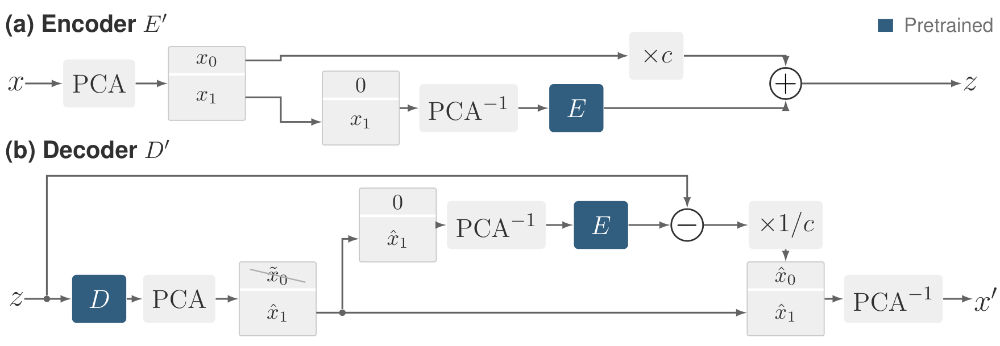
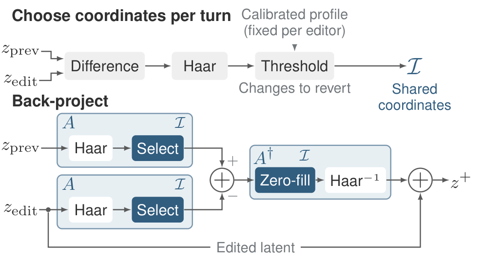

Abstract
Consistency is essential to generative workflows: repeated processing should preserve information beyond the changes explicitly requested. In latent diffusion models, this requires stability both when moving between latent and pixel spaces and when applying successive edits. Autoencoding errors and unintended changes from the editing model can accumulate across these operations, progressively altering image structure, texture, and color.
We introduce Déjà‑VAE, a framework that combines exact autoencoding consistency with calibrated editing stabilization, without training or fine‑tuning. Its autoencoding component converts a pretrained variational autoencoder into a surjective pseudo‑invertible neural network, with a fixed gain balancing deviations from the pretrained encoder and decoder. The modified decoder D' is an explicit nonlinear right inverse of the encoder E', satisfying E'(D'(z))=z by construction. Consequently, D' is a reflexive generalized inverse: latent round trips preserve their input, up to numerical precision, and repeated image reconstruction is idempotent.
To suppress editing drift, adaptive wavelet back‑projection finds the closest latent to the editor's output in \ell_2, subject to matching the previous latent on wavelet coefficients whose changes fall below calibrated thresholds. This correction is applied once per turn, with no additional network evaluations after calibration. Together, these components support workflows that remain in latent space or interleave generation with pixel‑space operations and constraints. Tests across models and editing benchmarks show less drift than stock pipelines and dedicated consistency methods.
Method


Latent back‑projection. After each turn, the change d=z_{\text{edit}}-z_{\text{prev}} is moved to a two‑level Haar basis W. Coefficients whose change is below a calibrated threshold return to their input values; all others stay edited:
Thresholds combine a per‑turn noise estimate from the finest diagonal band with a band profile measured once per editor on no‑op chains.
BibTeX
@misc{dejavae,
title = {D{\'e}j{\`a}-VAE: Training-Free Consistent Editing with
Pseudo-Invertible Encoders and Latent Back-Projection},
author = {Libman, Ron and Ehrlich, Yamit and Fried, Ohad and Shocher, Assaf},
year = {2026}
}